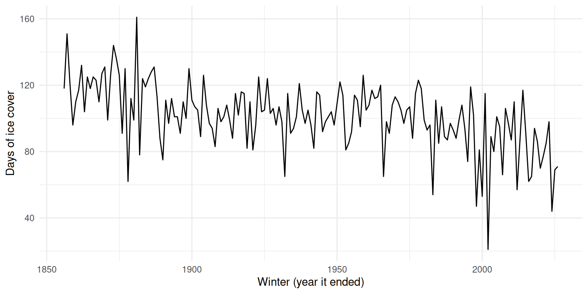

2 Quarto Workshop: Your First Quarto Report
2.1 When is Lake Mendota frozen?
The Wisconsin State Climatology Office decides each winter.
For Mendota, one of their rules is a bit unusual:
- Can you row a boat from Picnic Point to Maple Bluff?
- If not, the lake is frozen.
The story, handed down by oral tradition:
- UW limnologists E. A. Birge and Chancey Juday were often out on the lake in a rowboat
- The ice along that line decided whether they could row a case of beer to their friends in Maple Bluff
2.2 Our data
Observers have recorded ice on Lake Mendota every winter since the 1850s.
You downloaded them to data/mendota_ice.csv, one row per winter:
winter: the winter, e.g.,1855-56year: the year that winter endedice_days: days the lake was frozen
171 winters, from 1855-56 to 2025-26.
- The question for our report: is ice cover declining?
2.3 What we will build
One file, report.qmd, with:
- A YAML header: title, author, date, format
- Text written in markdown: headings, paragraphs, lists
- Code chunks that load the data and draw a figure
- Inline R: numbers in sentences, computed from the data
We will render it after each step so you can see what changed.
2.4 Create the file
In the terminal, move into your repo and create an empty file:
cd ~/github/mendota_ice
touch report.qmdThen open report.qmd in RStudio:
- Use the Files pane, or File → Open File
- It is a plain-text file, like an
.Rscript
2.5 The YAML (“Yet Another Markup Language”) header
Type this at the very top of report.qmd:
---
title: "Ice Cover on Lake Mendota"
author: "Your Name"
date: today
format: html
---The header sits between two lines of ---
- Each line is a
key: valuepair format: htmlsays what to builddate: todayfills in the date each time you render
2.6 Render it
Back in the terminal:
quarto render report.qmdQuarto writes report.html next to your .qmd.
- Open it in your browser
- In RStudio: click it in the Files pane → View in Web Browser
So far, just a title, author, and date.
- Each time you change the
.qmd, render again and reload the page
2.7 Markdown: headings, text, and lists
Below the YAML header, add:
## Background
Lake Mendota has been watched for ice since the **1850s**.
For each winter, the record notes:
- the date the lake froze
- the date it opened
## Ice cover over time##is a section heading,###a subsection- Put a space after the
# - Start at
##; the YAMLtitleis already the top level **bold**makes text bold- A line starting with
-is a list item
2.8 Blank lines matter
If you leave out the blank line before the list (Don’t do this step today)
For each winter, the record notes:
- the date the lake froze
- the date it openedYou get one run-on paragraph:
For each winter, the record notes: - the date the lake froze - the date it opened
Markdown needs a blank line:
- before a list
- before and after a heading
- between paragraphs
2.9 Your turn
2.10 Code chunks
R code goes in a code chunk:
```{r}
#| label: setup
library(tidyverse)
ice <- read_csv("data/mendota_ice.csv")
```- Starts with
```{r}and ends with``` - Lines starting with
#|are chunk options labelnames the chunk (use snake_case; not always required but helps when debugging)
Add this chunk just below the YAML header, then render.
- A setup chunk at the top loads packages and data for the whole document
2.11 Hide the messages
Your readers do not need these in your report:
- the tidyverse startup messages
- the column messages from
read_csv()
Add one option to the setup chunk:
```{r}
#| label: setup
#| message: false
library(tidyverse)
ice <- read_csv("data/mendota_ice.csv")
```message: falsehides messages; the code still runs
Want to hide the chunk completely?
include: falseruns the code but shows neither the code nor its output
2.12 Add a figure
Under ## Ice cover over time, add a chunk:
```{r}
#| label: ice_plot
ice |>
ggplot(aes(x = year, y = ice_days)) +
geom_line() +
labs(x = "Winter (year it ended)", y = "Days of ice cover") +
theme_minimal()
```Render again.
- Quarto runs the chunk and puts the figure right below the code
- It also makes a
report_files/folder for the image; more on that in the next unit
2.13 The figure in your report
- Lots of year-to-year variation
- But the trend is down
2.14 Inline R
Do the work in a chunk:
```{r}
#| label: means
mean_1800s <- ice |> filter(year < 1900) |> pull(ice_days) |> mean() |> round()
mean_recent <- ice |> filter(year >= 2000) |> pull(ice_days) |> mean() |> round()
```Then put the results in your sentences with inline R:
Before 1900, the lake averaged `r mean_1800s` days of ice.
Since 2000, it has averaged `r mean_recent`.- Backtick, the letter
r, a space, then R code, then a closing backtick - Keep inline R short; do the work in a chunk
Before 1900, the lake averaged 114 days of ice. Since 2000, it has averaged 81.
2.15 Render runs in a fresh session
In the RStudio console, run:
n_winters <- 171Then add a sentence to report.qmd and render:
There are `r n_winters` winters in the record.n_winters exists in your console.
- So why will this fail?
2.16 The error
Error in eval(parse_only(code), envir = envir) :
object 'n_winters' not found
Quitting from report.qmd:44-44
Execution haltedquarto render runs your code in a fresh R session.
- It cannot see anything in your console
- Not even chunks you ran in RStudio with the green ▶
- Every object the report uses must be created in the report
This is a feature:
- If it renders, anyone with your
.qmdand data can rebuild it
To fix it:
- Create it in the report: add
n_winters <- nrow(ice)to a chunk above the sentence
2.17 Your turn
2.18 Your turn: what to type
Below the means chunk, your text should look like this:
Before 1900, the lake averaged `r mean_1800s` days of ice.
Since 2000, it has averaged `r mean_recent`.
The shortest winter on record had `r min(ice$ice_days)` days of ice.Before 1900, the lake averaged 114 days of ice. Since 2000, it has averaged 81.
The shortest winter on record had 21 days of ice.
Still getting an error?
- The sentences must come after the
meanschunk; code runs top to bottom - Delete or fix the
n_winterssentence from the last demo
2.19 Where we are
We have:
- Written a YAML header that sets the title, author, date, and format
- Used markdown for headings, text, bold, and lists
- Run R code in chunks, and hidden messages with chunk options
- Put computed numbers in sentences with inline R
- Seen that
quarto renderruns in a fresh session